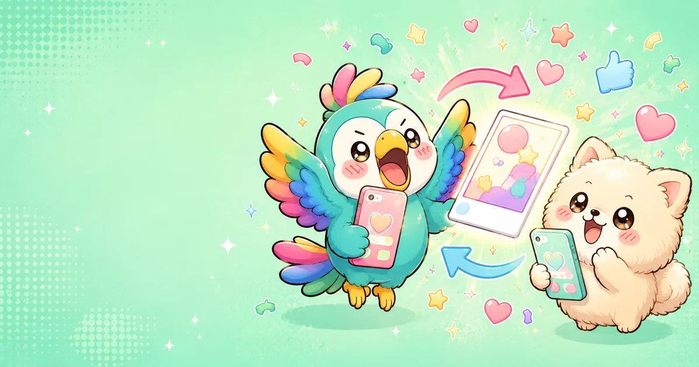

診断結果をXでシェアして遊ぶコツ
診断結果は、当たったかどうかを一人で判定するより、友だちと見せ合うとぐっと楽しくなります。
SNS承認欲求モンスター診断では、結果名、スコア、チェキ風画像が表示されます。Xで共有するときは、テキストだけでなく画像も添えると、タイムラインで結果の雰囲気が伝わりやすくなります。
まず結果画像を保存する
結果画面の「チェキを画像として保存/共有する」から、チェキ風画像を端末に保存できます。iPhoneでは共有シートが開くので、「画像を保存」を選ぶと写真アプリに残せます。
X投稿では一言コメントを足す
自動で入る投稿文に加えて、「これは当たってる」「友だちの結果も見たい」「この名前ひどいけど好き」など、自分の一言を足すと反応が返りやすくなります。ネタとして受け取れる軽さが、この診断の強みです。
画像とハッシュタグを一緒に使う
投稿時には、診断ページのURLとハッシュタグが入ります。さらに保存した結果画像を添えると、見た人が自分も試しやすくなります。画像は結果名がすぐ見えるので、診断コンテンツとの相性が良い形式です。
友だちに投げるときの楽しみ方
- 「私これだった。あなたは何になる？」と軽く聞く
- スコアだけで勝ち負けにせず、名前のクセを楽しむ
- 似ている結果が出た人同士で並べてみる
- 極端な結果が出ても、エンタメとして笑って扱う
結果をシェアするときは、誰かを決めつけるより、自分の結果をネタにするくらいがちょうどよい距離感です。